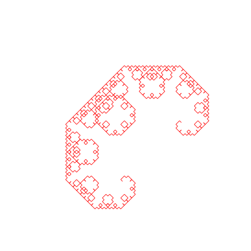
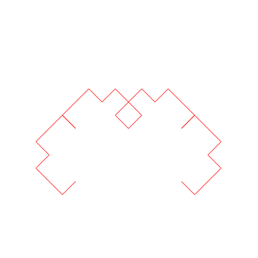
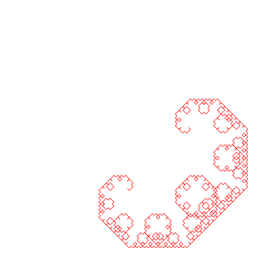
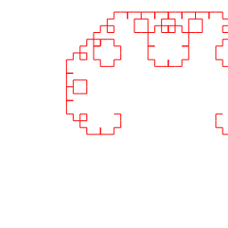

CSE 101 -- Prog 0
Due before midnight, Sunday, October 08, 2023.
Late submissions will not be accepted/graded.

Change Log:
Objectives:
Brush up on C and
recursion.
You will also need to brush up a bit on geometry (lines and slopes)
and learn a bit of computer graphics along the way.
Description:
In this programming assignment, you will be generating graphics patterns procedurally.
Specifically, you will be writing code to draw recursively defined shapes
known as
Levy C fractal curve.
Details:
-
You will read from stdin, which you can redirect from a file.
Input will consist of:
- output filename - string with no spae,
- dimension of image - 2 integers,
representing width (number of columns) and height (number of rows)
respectively.
Coordinates of points on the image are 0..W-1, 0..H-1.
The origin is at the top left corner.
- recursive depth - an integer,
- starting point - 2 doubles (x and y coordinates),
- ending point - 2 doubles (x and y coordinates).
-
In the following examples, input/output pairs are:
- out1 512 512 10 250 370 370.0 250.0
will produce the following image in a file called out1.png

- out2 512 512 5 150.0 360.0 360.0 360.0
will produce the following image in a file called out2.png

- Note that the order of points matter. Compare this with the first
example:
out3 512 512 10 370 250 250 370
will produce the following image in a file called out3.png

- If parts of the C curve falls outside the drawing area,
those parts are drawn but are not visible. You don't need to do anything
special in your code sine Cairo will handle it for you.
out4 256 256 8 128 128 250 128
will produce the following image in a file called out4.png

-
Requirements:
- In addition to handling the input specifications mentioned above, your output
should consist of a solid background color, and a solid foreground color (for drawing your boxes).
The examples above use a white background and a red foreground color.
You can change these two colors, but please pick a pair that are easy to see.
- Each run of your code should produce a png file.
-
Graphics Library:
There's only a limited number of free simple 2D graphics library with C binding.
For this programming assignment, we will use the
Cairo Graphics Library.
It's easy to learn the basics needed for this assignment
and it also supports multiple output "targets".
For this assignment, your program will output images in png format.
It also runs on multiple platform: Unix, Windows, Mac.
The Cairo Graphics Library is already installed on our campus unix webserver: unix.ucsc.edu.
Please make sure that your code compiles, runs, and produces the correct output on this
server before submitting your code.
Tutorial/Startup code:
- Cairo Tutorial is a nice concise tutorial.
The coordinate system in Cairo graphics
has x increasing going to the right,
and y increasing going down!
When we do arithmetic, we usually think of y increasing going up.
You can convert Cairo y-coordinates to the standard y-coordinates
by simply multiplying them by minus 1.
After doing your arithmetic, be sure to convert back to Cairo y-coordinates
before sending the draw commands.
- Makefile
Note that the source and executable files are named
ccurve.c and
ccurve respectively.
- Startup code which produces the following output:

-
Input/Output:
-
You will be reading input to your program from stdin.
To run your code, we will be doing something like:
ccurve < input1.txt.
-
The input files will contain the input specs mentioned above prepended by an output filename.
Each input file will contain info for a single run.
For example, input1.txt might contain:
output1 512 512 10 250 370 370.0 250.0.
It should then generate output1.png which contains the output image of your run.
Use blank space character as delimiter for the filename.
Grading:
-
Rubric:
We followed the following grading rubric:
* 15 points for proper comments and well written code
* 20 points for using recursion properly and correctly
* 5 points for following all the instructions
* 60 points for 6 test cases, 10 points per test case.
-
Who graded your assignment based on last name:
(i.e. who to contact if you have questions about how your program was graded)
Andrew Song: a* - ji*
Gaurav Sahasrabudhe: jo* - pa*
Mona Zhao: Pe* - Z*
Submission:
Make sure that you've compiled and tested your code on the campus
unix timeshare before submitting.
Put your makefile and source files in a folder named prog0.
In the same directory where you have the prog0 folder,
the following command will recursively archive the contents
of your prog0 folder into a file named prog0.zip
zip -r prog0.zip prog0
Submit prog0.zip on Canvas under Program 0.
You can submit as often as you want up until the deadline.
We will only look at your most recent submission.
Read the
general instructions on how to submit your work.
Last modified
Friday, 13-Oct-2023 20:35:28 PDT.